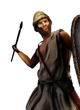
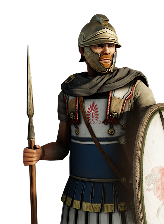
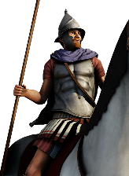
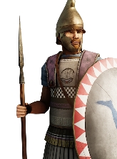
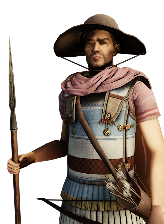
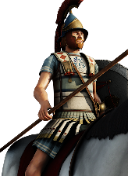

RTR: Imperium Surrectum
RTR: Imperium SurrectumSyracuse
← all settlements · all regions · wiki index
The settlement of the region of Trinakria, held at the campaign start by Syracuse (Greek) — their capital.
Size: Large city · Population: 11,000 · Buildings: 18
What is already built
What can be recruited here
| Unit | Raised at | Cost | Upkeep | Unit | Raised at | Cost | Upkeep | Unit | Raised at | Cost | Upkeep | |||
|---|---|---|---|---|---|---|---|---|---|---|---|---|---|---|
| Akontistai | Homeland | 803 | 294 |  | Euzonoi | Homeland | 1,150 | 421 | Greek Archers | Homeland | 1,081 | 396 | ||
| Greek Slingers | Homeland | 916 | 335 | Prodromoi | Homeland | 1,338 | 539 | Sicel Peltophoroi | Homeland | 936 | 343 | |||
 | Sicel Thureophoroi | Homeland | 1,598 | 585 |  | Syracusan Cavalry | Homeland | 2,692 | 1,084 | Syracusan General's Bodyguard | Homeland | 5,063 | 76 | |
 | Syracusan Hoplites | Homeland | 1,637 | 599 |  | Syracusan Neaniskoi | Homeland | 1,303 | 477 |
1 more unit is raised here once something changes — greyed out below, grouped by what each is waiting on.
Waiting on the Syracusan Military Reforms — 1 unit
| Unit | Once you have | Cost | Upkeep | |||||||||||
|---|---|---|---|---|---|---|---|---|---|---|---|---|---|---|
 | Syracusan Aspidophoroi | Homeland | 2,453 | 988 |
3 more units once the building is up — greyed out, with what each needs.
| Unit | Once you have | Cost | Upkeep | Unit | Once you have | Cost | Upkeep | |||||||
|---|---|---|---|---|---|---|---|---|---|---|---|---|---|---|
| Ballistas | Armourer (Industry), Foundry (Industry) | 1,753 | 642 | Lithoboloi | Armourer (Industry), Foundry (Industry) | 2,533 | 927 |
| Unit | Once you have | Cost | Upkeep | |||||||||||
|---|---|---|---|---|---|---|---|---|---|---|---|---|---|---|
| Large Lithoboloi | Foundry (Industry) | 3,073 | 1,125 |